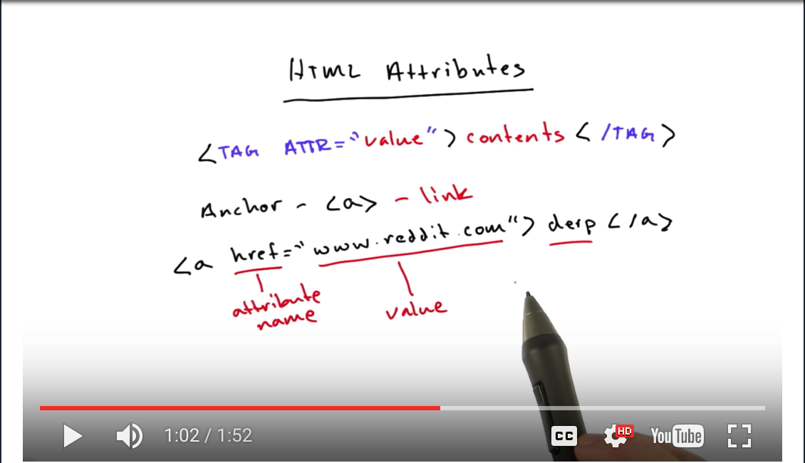

The World Wide Web, How it Works, and HTML:
The Internet was created in the early 1990s, and has some 30 billion webpages at this time; which, if I'm being completely honest, surprised me quite a bit. Components of the web include: a) the user, you and your computer running a web browser such as Chrome (which is what I prefer), Safari, Firefox, and Internet Explorer; b) the Internet; and c) servers; computers that are optimized for hosting files).HTML stands for HyperText Markup Language and it is the heart of the web making the web, "weblike."
Accordingly, HTML is made up of:
To troubleshoot issues you may experience with your HTML code, check out this website to validate your HTML code.
Tags and Elements:
Computers interpret language literally, so it makes sense that computer programming languages are designed to limit ambiguity. In HTML markup, tags typically bookmark the content of an element with an opening and closing tag. These tags help computers interpret your HTML with more specificity, giving your webpage more structure, and design. Tags can be used to bold, italicize, or underline words of text, for example. For an HTML Element Reference table in which HTML tags are ordered alphabetically, contain a description, and a note as to if that tag is supported by the current version of HTML, HTML 5, click here.
Furthermore, the anchor tag attribute was best drawn up by Scott, and I found this example very teachable because this anchor tag creates the hyperlink, or link, demonstrating the power of the connectivity of the web with such a simple line of code: 
Inline v. block elements v. container elements:
Inline elements are just text, which code displays in a line in your browser window. There can be several spaces between the text of code, called whitespace, but unless otherwise styled, the text will simply end in its current line, and go to the next, such as when the single line break tag, br, is used. Also, images are inline elements. Unlike inline elements, block elements actually form a box around the text to which heights, and widths can be applied. Moreover, container elements do nothing but contain stuff inside them.
About Me:
I graduated from college almost 6 years ago now with a Bachelor of the Arts, in Theatre. After graduation I worked in regional theatre production, until I left the arts to work full time in the restaurant service industry. After a few years, however, I've realized that waiting tables won't get me where I want to be, thus I've begun my adventure into the field of coding and programming.
Udacity was recommened to me by a personal friend, Michael Lucero, who is currently enrolled in your Front-End Nanodegree. I look forward to beginning my education with you, and thank you for giving me an opportunity to tell you a little bit about myself.